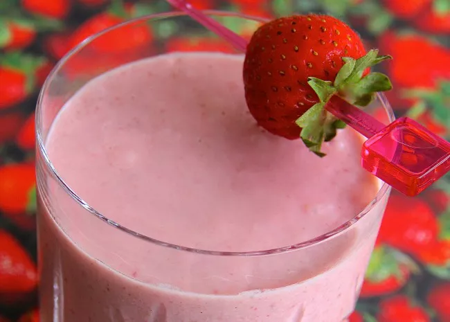

Quick Strawberry Oatmeal Breakfast Smoothie

Description
This is a fast and filling smoothie with a deep-pink color and a rich,
creamy texture.
Ingridents
- ½ cup rolled oats
- 1 teaspoon chia seeds
- 14 frozen strawberries
- 6 ounces nonfat vanilla Greek yogurt
- 1 banana, broken into chunks
- ½ cup almond milk
- ½ teaspoon vanilla extract
Steps
-
Blend oats and chia seeds together in a blender to a fine consistency.
-
Add strawberries, yogurt, banana, almond milk, and vanilla extract
- blend until smooth.
Previous recipe
Home
Next recipe